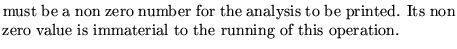

Input formatParameter definitions
PARTicle distribution analysis ...(up to 80 characters)
nopt
nopt 
Examples
The example, taken from demo7 illustrates its use in conjunction with the generation of particles and subsequent tracking.
GENERATION OF PARTICLES 3 6 6 6 6 1 1 1.0 500 0 0 0 0 0 0, TRACKING OF THE ABOVE five hundred PARTICLES -1 -2 0 1, PARTICLE ANALYSIS 10; STOP